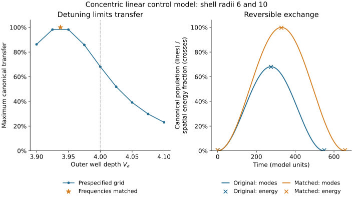

Analytical constructions, numerical cross-checks and limits of an SU(3) interpretation
We investigate the emergence and preservation of complex mode triplets in geometric oscillator and field models. Tetrahedral and cube graphs possess degenerate linear triplets with U(3) symmetry and an SU(3) subgroup. A local quartic term already breaks SU(3) and couples to additional modes. We determine conditions for exchange that preserves the subspace and construct a conservative, explicitly symmetry-compatible total-density mediator. None of 54 individual distance kernels satisfies the chosen isotropy criteria. A static sum over six directions is isotropic but does not preserve the coherent sector when implemented as a network of independent neighbours; matched sitewise connections pass both checks. A linear control model with prescribed concentric shells produces equal exchange in three dipole channels. Frequency detuning explains incomplete transfer in this model. The required pair of positive dipole levels was not found in the finite Q-ball box problem studied; very weak binding and the continuum remain unresolved. A self-consistent field derivation, nonlinear symmetry preservation, local gauge dynamics and a QCD interpretation remain outstanding.
The starting question is whether four or eight coupled constituents can generate three equivalent internal states and suitable interactions. We distinguish the existence of a degenerate linear mode sector from its nonlinear preservation and from a local gauge theory. We study dimensionless complex graph amplitudes. The geometry is prescribed; the constituents do not move together to form a bound object on their own.
The project's physical starting point consists of localized, time-periodic solutions of a complex scalar field, known as Q-balls. A possible spatial three-channel sector is the dipole sector l = 1 with three angular components. Whether this triplet also possesses the required radial levels and nonlinear dynamics that preserves the subspace is a separate question. The graphs and shell potential serve here as controlled comparison models; their geometry is not derived from a Q-ball.
The mathematical tools—graph spectra, unitary invariance, projection and completing the square—are known. No claim of novelty or priority is made. The contribution of this working draft consists in their concrete combination, the counterchecks and the identification of the missing derivational steps.
| Quantity | Meaning | Not to be identified with |
|---|---|---|
| N = 4 or 8 | Number of graph sites | Colours or gluons |
| a ∈ ℂ³ | Three complex mode amplitudes | Already established quark states |
| l, m | Spatial angular momentum index and magnetic quantum number | The dimension of this triplet |
| A = 1,…,8 | Generator index of SU(3) | Eight spatial vertices |
Notation by model sector: N counts graph sites only. λ denotes the Laplacian eigenvalue in the graph sections; in Section 5 it denotes the quartic coupling, whereas the indexed λA denotes a Gell-Mann matrix. A and B are self-blocks in Section 4 and radial operators in Section 6.3; the well depth in Section 6.2 is denoted Va. h is the mediator coupling in Section 5 and the radial step size in grid specifications. K is the mediator stiffness there and the two-mode frequency matrix in Section 6.1. L denotes the graph Laplacian, ℒ the Lagrangian in (11) and the Lagrangian density in Section 6.3. QA are the eight mode charges and Qφ is the scalar Q-ball charge. The distance d is defined by the graph or shell geometry under consideration.
For z ∈ ℂᴺ we choose canonical complex amplitudes and the graph Laplacian L:
This canonical structure is a model assumption. It is not derived here from a relativistic field theory. For the complete tetrahedral graph K₄ and the edge graph of the cube Q₃, the exact spectra are
Let X be the matrix of vertex coordinates with entries ±1: for the tetrahedron its rows are (1,1,1), (1,−1,−1), (−1,1,−1), (−1,−1,1), and for the cube they are all eight sign combinations. Then U = X/√N has orthonormal columns. For z = Ua, this gives H₂ = λ a†a with λ = 4 or 2, respectively. Every transformation a ↦ Wa with W ∈ U(3) preserves this functional.
Consequence. The degenerate complex quadratic sector has an additional continuous internal symmetry. The spatial symmetry group of the finite object remains discrete. More precisely, U(3) ≅ [SU(3) × U(1)]/ℤ₃. The common phase has therefore not been removed.
Increasing a single edge weight from 1 to 1.01 splits the triplet into a doublet and a singlet: the tetrahedral triplet becomes {4; 4; 4.02}, and the lower cube triplet becomes {2; 2; 2.0049688749}. Moreover, the uniform mode with eigenvalue zero lies below the triplet considered. A low-energy argument alone therefore does not justify using the triplet in isolation.
With S = a†a, projection of a local quartic energy gives exactly
The identity follows by expansion and the second and fourth sign moments of the vertex coordinates. At S = 1, it equals 1/N for both a = (1,0,0) and (1,i,0)/√2, but 7/(3N) for (1,1,1)/√3. Equal-norm states thus have different energies: even the SU(3) subgroup is broken, since SU(3) acts transitively on the unit sphere in ℂ³. Consequently, U(3) is not preserved either.
In addition, |Ua|²Ua generally has a component outside the triplet. Its amplitude projected onto the normalized external mode is
For the tetrahedron this is the uniform mode; for the cube it is the xyz-parity mode. Particularly symmetric initial states with one or two nonzero components can conceal this effect.
Numerically, the full equation i ż = Lz + 0.5|z|²z was integrated up to T = 20 without projecting back onto the triplet. The initial vector in the triplet was proportional to (1, 0.7 + 0.3i, −0.2 + 0.6i). DOP853 with relative tolerances rtol = 10⁻⁹ and 10⁻¹¹, absolute tolerances atol = 0.01 rtol, maximum step 0.1 and 401 output points yielded the following maximum relative leakage over the 401 output points at the finer tolerance:
| Initial amplitude | Tetrahedron | Cube |
|---|---|---|
| 0.1 | 3.861 × 10⁻⁸ | 9.512 × 10⁻⁹ |
| 0.3 | 3.918 × 10⁻⁶ | 8.502 × 10⁻⁷ |
| 1 | 8.910 × 10⁻⁴ | 2.021 × 10⁻⁴ |
The leakage is ‖(I − UU†)z‖²/‖z(0)‖². The norm and energy acceptance criteria of 10⁻⁷ and the final-state comparison criterion of 10⁻⁶ were met. Small leakage does not guarantee symmetry: equation (3) already breaks the symmetry within the sector.
Let two graphs be coupled by nonnegative weights Wᵢⱼ:
The second line of (5) applies to z = Ua and z′ = Vb. DA and DB contain the row and column sums of W, respectively. In a common internal basis, this expression is invariant under every simultaneous SU(3) transformation if and only if A = αI, B = βI and C = cI. This follows from the commutant of the irreducible fundamental representation. A relative unitary choice of basis can turn C into a scalar matrix only if its three singular values are equal; it cannot repair anisotropic self-blocks.
Furthermore, the sector must remain invariant under the full dynamics. With PU = UU† and PV = VV†, the additional requirements are
Matched connections. For identical bases and W = JI, one obtains exactly Hex = J‖a−b‖² without leakage. This contact law is explicitly imposed, not derived from free field overlap. In contrast, W = w11ᵀ gives C = 0 for the nonuniform triplets: a uniform connection between all sites shifts frequencies but produces no triplet exchange.
As a countermodel, we chose Wᵢⱼ = exp[−|rᵢ−r′ⱼ|²/(2ℓ²)]. Vertex radius 1, distance d ∈ {3,4,6}, range ℓ ∈ {1,2,4} and three orientations (identity, Rz(π/4), Ry(π/2)) give 54 cases across the two geometries. No case met the relative isotropy criterion of 10⁻¹⁰ with ‖C‖ > 10⁻⁸. The smallest cross-block anisotropy value was 0.29739. The basis-independent relative singular-value spread is also at least 0.0144 in all 54 cases; a relative basis rotation therefore cannot rescue any of them. This is a finite search result, not an exclusion of all distance laws.
In contrast, summing identical kernels for the six displacements ±4eₓ, ±4eᵧ, ±4ez at ℓ = 2 gave C = −0.05845231382 I (tetrahedron) or −0.05960274201 I (cube), isotropic self-blocks and leakage residuals below 1.1 × 10⁻¹⁵. Negative cross-blocks do not contradict the positivity of the original spring energy.
Scope limitation: The check concerned an aggregated coupling kernel. Six independently evolving neighbours constitute a larger dynamical system. Their coherent combination must be studied there with its own normalization (a factor √6 for six equal amplitudes) and all orthogonal neighbour modes. The static sum does not establish its dynamical invariance.
A central cluster and six independent neighbouring clusters at ±4 along the coordinate axes each have their own internal graph Laplacian. Only the centre and its neighbours are coupled. The two geometries give Hamiltonian matrices of dimensions 28 and 56, respectively. We compare identical matched connections with J = 1 against the distance kernel from Section 4.1 with ℓ = 2 and the six displacements ±4ek.
Two subspaces must be distinguished: the 21 independent local triplet amplitudes and the six-dimensional space comprising the central triplet and an equal neighbour amplitude. In the second space the canonically normalized embedding is z₀ = Ua, zₛ = Ub/√6. With matched connections this space is exactly invariant; its Hamiltonian is
For the distance kernel, too, the merely projected 6×6 matrix is isotropic (numerical residual below 1.3 × 10⁻¹⁵). Its block coupling to the exterior of the subspace does not vanish, however. The Frobenius norm of this block is 0.88009 for the tetrahedron and 1.79607 for the cube. The full time evolution therefore leaves the projected space.
| Geometry / initial state | Outside local triplets | Outside coherent combination |
|---|---|---|
| Tetrahedron / central | 1.382 % | 2.802 % |
| Cube / central | 4.676 % | 6.491 % |
| Tetrahedron / neighbour sum | 0.605 % | 99.749 % |
| Cube / neighbour sum | 23.242 % | 96.333 % |
The entries are maximum norm fractions over 801 output points up to T = 80. The matched connection produced only residuals below 6.3 × 10⁻²⁹ for all initial states. Time evolution was evaluated by eigendecomposition of the full linear Hamiltonian; norm and energy drifts remained below 3 × 10⁻¹⁴. The network computation required 0.047 CPU-s on one server CPU core.
The mechanism can already be seen analytically: the uniform mode of a single neighbour receives the amplitude u₀ᵀWₛᵀUa. These contributions can cancel in an aggregated sum, but in the full network they lie in different neighbour spaces. Their squared norms do not cancel. This disproves the transfer of static sum isotropy to the chosen dynamical reduction. It does not exclude other globally distributed degenerate eigenmodes of the entire network.
An explicitly U(3)-compatible nonlinearity depends only on the total density S. For two triplets, each with a real mediator, we define
Completing the square gives, for each constituent,
For K > 0 and λ > h²/K, the energy is bounded below for arbitrary real ω and J. This is a sufficient condition: the positive terms quadratic in S dominate the contributions that are at most linear, since ‖a−b‖² ≤ 2(SA+SB). With ω = K = 1, λ = 0.3 and h = 0.4, the residual quartic coefficient is 0.14. Static minimization of the mediator is exact; using it as a dynamical elimination would additionally require a separation of time scales.
Direct differentiation shows conservation of M = aa† + bb†. The total norm tr M and the eight quantities QA = tr[(λA/2)M] are thus conserved. Here λA denotes the Gell-Mann matrices, not the quartic coefficient. These are Noether quantities of the model, not already identified electric or QCD colour charges.
For an isolated triplet, the mediator alone changes only its common phase velocity. Population exchange between the constituents requires J ≠ 0. For J ∈ {0;0.15} and h ∈ {0;0.4}, four parameter settings were computed up to T = 80, each with rtol = 10⁻⁹ and 10⁻¹¹ and atol = 0.01 rtol. Initial data before common normalization were a = (1; 0; 0), b = (0; 0.7; 0.3i). Both vectors are divided by √1.58. In addition, y = (0; 0) and P = (0.1; −0.1).
| J | h | Range of |a₁|² up to T = 80 |
|---|---|---|
| 0 | 0 or 0.4 | Constant at 0.6329113924 |
| 0.15 | 0 | 0.0000006121 to 0.6329113924 |
| 0.15 | 0.4 | 0.0000365731 to 0.6329113924 |
For the last parameter setting, the maximum energy drift at the finer tolerance was 1.16 × 10⁻¹² and the charge-matrix drift was 6.12 × 10⁻¹³. The reported population ranges refer to 801 output points; continuous-time extrema were not certified. The tolerance comparisons passed. These closed dynamics contain neither radiation loss nor free spatial particle motion. Long-term spatial binding or a bound state in the continuum (BIC) does not follow.
A linear control model with prescribed shells supplies equal channel couplings from a scalar field instead of three matched ports. We choose the linear real Klein–Gordon action with a prescribed radial potential:
This is a linear control model with prescribed shells, not a self-consistent Q-ball solution. With φ = Σᵢuᵢ(r,t)Yᵢ(Ω)/r and the real normalized dipole harmonics Yᵢ = √(3/(4π)) nᵢ, angular integration yields the same radial operator D₁ = −∂ᵣ² + 2/r² + 10 + V(r). The radial measure is dr, with ∫uₙuₖdr = δₙₖ for the eigenfunctions. Regularity at the origin and decay on the half-line are implemented numerically through a regular origin and a Dirichlet boundary at the edge of the box. The identical treatment of the angular components follows from spherical symmetry and orthogonality.
Two exact radial eigenfunctions with positive eigenvalues e₁,e₂ generate an invariant linear sector. Canonical oscillator amplitudes cₙ = (√ωₙ qₙ + i pₙ/√ωₙ)/√2 with ωₙ = √eₙ give H = Σωₙ|cₙ|² without a rotating-wave approximation. A common radial basis rotation O, determined by diagonalizing the radius operator projected onto this sector, gives
The exchange strength is thus obtained from the radial field computation and is equal for all three angular components. General U(3) transformations of the canonical amplitudes are not simply spatial rotations; they can mix field coordinates and momenta.
| Shell separation d | |J| | Maximum canonical transfer | First maximum t |
|---|---|---|---|
| 2 | 0.0637380 | 99.909 % | 24.633 |
| 3 | 0.0172399 | 97.435 % | 89.938 |
| 4 | 0.00471585 | 68.151 % | 274.976 |
| d | e₁ | e₂ | 10 − e₂ |
|---|---|---|---|
| 2 | 8.03325 | 8.77246 | 1.22754 |
| 3 | 8.27069 | 8.47283 | 1.52717 |
| 4 | 8.33085 | 8.39694 | 1.60306 |
Both eigenvalues considered lie below the free continuum threshold 10; the third discrete box value lies above it. Table: R = 24, h = 0.025.
The values are from the grid R = 24, h = 0.025. Halving the grid spacing at R = 20 changed |J| by less than 3 × 10⁻⁴ in relative terms; increasing the box from 20 to 24 changed it by less than 7 × 10⁻¹¹. The norm, eigenresidual, analytical two-mode evolution and predefined convergence checks passed. Nine radial cases and the angular checks required 0.0182 CPU-s on one server CPU core.
Interpretation of the percentages: The quantity is |b|² for an initially normalized inner canonical combination. It is neither the fraction of spatial field energy in the outer shell nor a particle number. Physical field coordinates carry frequency-dependent factors 1/√ωₙ. The transfer is determined analytically from the two-mode matrix; the numerical eigenvalues are not interval-certified.
Nonlinearity remains the limitation. For a complex spatial dipole amplitude η = a·Y, the exact identity is ∫|η|⁴dΩ = 3[2(a†a)² + |a·a|²]/(20π). A normalized linear amplitude and a normalized circular amplitude therefore differ by a factor of 1.5. This angular test already disproves automatic SU(3) invariance of a local complex quartic term. It is not an already derived nonlinear normal form of the real field in (11). An additional P₂ angular perturbation also splits the projected operator and couples to l = 3.
Kaminaga's concentric δ-shells provide a mathematical parallel for the m-independent partial-wave structure [3, Lemma 9 and Remark 4]. His asymptotic tunnelling theorem, however, concerns tuned limiting levels at l = 0 and large separation [3, Theorem 17]. It establishes neither our smooth l = 1 numerical values nor exact complete transfer at finite separation; the latter follows here from our own two-mode algebra. Technical review notes on the printed proof in §§6–7 are documented in the source audit; its error orders are not adopted as certification. For the original Q-balls, the coupled l = 1 problem remains decisive. Panin and Smolyakov identify translations in another two-field model [4, Eq. (22)]; their stability study proves neither the absence nor the presence of positive internal modes in our model.
Result and remaining gap: Within the linear control model, equal exchange follows from the prescribed spherical-shell geometry. The autonomous emergence of this geometry and symmetry preservation under actual nonlinear field couplings remain open. Assuming an internal U(3) symmetry at the outset of a multicomponent theory would not replace this derivation.
The maximum transfer at shell separation d = 4 is not a special universal number. For the canonical two-mode matrix in (12), with δ = εA − εB,
J controls exchange and δ controls frequency detuning. As the separation grows, J decreases, so a small residual detuning limits transfer more strongly. The untransferred fraction remains within the conservative mode system.
A control varies only the outer well depth Va, keeping the radii 6 and 10 fixed. A predefined grid Va ∈ [3.9;4.1] and a root search for δ(Va) restricted to this interval yielded Va ≈ 3.937515 on the finest grid. Relative to Va = 4, this is a decrease of approximately 1.56 %. The canonical transfer then reaches its full value analytically at δ = 0, provided J ≠ 0. On the finest grid, |δ| < 5 × 10⁻¹⁴. This is an expected control of frequency matching, not a new constant of nature.
In addition, the real field was reconstructed and its local energy for r > 8 was computed. The radial physical energy density is ½[u̇² + (u′−u/r)² + 2u²/r² + (10+V)u²]. Relative to the reduced radial functional, the inner partial energy acquires the boundary term −u(8)²/16 and the outer energy acquires the opposite term. This keeps the discrete total energy exactly consistent with the field operator used.
| Case, h = 0.0125 | Max. mode transfer | Outer field energy at mode maximum | Time |
|---|---|---|---|
| Va = 4 | 68.153 % | 67.934 % | 274.965 |
| Va ≈ 3.937515 | 100 % at frequency matching | 99.635 % | 328.715 |
The values 68.151 % and 68.153 % refer to the same quantity at h = 0.025 and h = 0.0125, respectively; the times correspondingly change from 274.976 to 274.965. This is grid dependence, not a different mechanism. The matched depth changes by approximately 4.5 × 10⁻⁶ between these grids. Reported digits document computational results and do not guarantee the same accuracy for continuum values.
Approximately 0.54 % of the field energy is already outside the cut initially. The second table row therefore corresponds to a net increase of approximately 99.09 percentage points of total energy in the outer region. The reported energy is evaluated at the canonical maximum; rapid carrier phases can slightly shift the maximum of the spatial energy. The canonical excitation subsequently returns. Incomplete transfer does not imply irreversible dissipation in this conservative model.

Computation on one server CPU core: 0.0774 CPU-s. Three grid spacings h = 0.05; 0.025; 0.0125 at R = 24, separate convergence criteria and numerical conservation checks passed. As the grid spacing is halved, an additional direct midpoint quadrature approaches the regional energy accounting approximately quadratically. No separate new box-size test was performed for the matched depth. Source code, parameters and data: coordination/resonance-20260930/shell-detuning/.
The applicability of the shell control model is tested using the complex single-field model with Lagrangian density ℒ = |∂ₜφ|² − |∇φ|² − U(|φ|²), U(S) = S−S²+S³/2. The ansatz φ = f(r)eiωt gives f″ + 2f′/r = (1−ω²)f − 2f³ + 3f⁵/2 with a regular origin and decay in the exterior. We use the stored profile at ω² = 0.7; its scalar Noether charge Qφ = 2 Im ∫φ̄∂ₜφ d³x = 2ω∫f²d³x is approximately 473.413. ρ denotes the perturbation frequency relative to the carrier ω, giving free sideband frequencies ω ± ρ. For the reduced radial l = 1 perturbation, the operators are
On the exact half-line, the translation mode satisfies A(rf′) = 0. It represents a displacement of the entire object, not an additional positive internal oscillator. The two free sidebands are simultaneously closed only for 0 < ρ < 1−ω ≈ 0.16333997.
Our conditional analytical statement. If B ≥ bI and 0 ≤ s = ρ² < b, the lower component can be eliminated exactly. The Schur operator and its derivative are
No commutativity of A and B is required. Congruence through Schur elimination preserves the negative inertia, since B−sI is positive. All ordered eigenvalues of F therefore decrease strictly with s. Under established initial-index, gap and endpoint conditions, the increase in negative index counts the additional positive-frequency zeros. At a singular right endpoint, its kernel dimension must also be counted. Simply projecting the translation out orthogonally would generally be incorrect; the full coupled inertia avoids this error.
| Box / step | Translation eigenvalue of A | λmin(B) | Second eigenvalue of M at test endpoint |
|---|---|---|---|
| R = 24 / h = 0.08 | −1.5391 × 10⁻⁴ | 0.2131403 | 0.0398112 |
| R = 32 / h = 0.04 | −3.8457 × 10⁻⁵ | 0.2131733 | 0.0211452 |
| R = 40 / h = 0.02 | −9.6131 × 10⁻⁶ | 0.2131817 | 0.0132527 |
The test endpoint is ρ = 1−ω−10⁻⁴. In all three discrete box problems the negative index remains one, and the endpoint is numerically nonsingular. No additional bound dipole mode was identified. The small negative translation value shrinks approximately quadratically with h under simultaneous box and grid refinement and is not interpreted as a physical instability. The free negative control passes. Computation on one server CPU core: 2.558 CPU-s; software validation on a separate QA host.
No claim of exclusion in the continuum: The finite box shifts weakly bound states. At the test endpoint, the slow asymptotic decay length is approximately 70.7, exceeding the largest box radius of 40. The second positive eigenvalue also decreases as the box grows. Very extended weak binding, the final frequency layer of 10⁻⁴, the exact threshold and open resonances therefore remain unresolved. The inertia counts are not interval-certified. The shell test remains a functioning linear control model with prescribed shells, but the two positive dipole branches it requires have not yet been established in the original Q-ball.
The next proof task is thus specifically to control the exterior, threshold behaviour and validated spectral counting. Our Schur derivation and its assumptions are recorded in the accompanying source audit; numerical artifacts are in coordination/resonance-20260930/qball-l1-gap/.
Spin-1 invariants as an algebraic comparison. For a Cartesian complex vector a, define F = −ia*×a. Direct expansion gives |F|² = S²−|a·a|². Equation (3) thus becomes [3S²−|F|²−2Σα|aα|⁴]/N: a rotationally invariant density/spin-magnitude part plus cubic anisotropy. In contrast, the angular quartic term in Section 6.1 is 3[3S²−|F|²]/(20π) and is invariant under spatial SO(3) rotations. Ho [5, Eqs. (4)–(8)] describes an interaction c₀n²/2+c₂|F|²/2 for atomic spin-1 condensates. Our Cartesian rewriting is our own algebraic identity; it identifies polar and circular amplitude orbits, not atomic scattering lengths or quantized particle spins. For a spatial l = 1 triplet, this representation initially denotes orbital angular momentum.
Direct connection to the Q-ball literature. The coupled single-field linearization with sidebands ω±ρ is described by Kovtun, Nugaev and Shkerin [6, Eqs. (11)–(15)]. For our potential, their coefficients are h = −2f²+3f⁴ and g = 1−4f²+9f⁴/2; these symbols local to the source are not the couplings of the mediator model. The source supports the linearization structure and angular degeneracy, not our specific spectrum. Panin and Smolyakov [4], in contrast, treat a different two-field potential; its translation mode is a comparison, not a derivation of our spectral result.
Distinction from spin ½. A spatial rotation by 2π acts as the identity on the l = 1 triplet. This is not the spinor representation, in which a 2π rotation changes the sign of the state. The internal embedding SU(2)⊂SU(3) with decomposition 2⊕1, or the description of two selected modes by Pauli matrices, therefore does not itself generate spatial spin ½. Likewise, parametrizing a spin-1 state as a symmetric product of two spinors would be a representation identity, not evidence for two constituent particles. Fermionic quantization of solitons is possible in other models: Krusch and Speight [7] construct it for Hopf solitons with suitable configuration-space topology and Finkelstein–Rubinstein conditions. For the unchanged model with field values in ℂ or ℂⁿ, including zero, and a zero boundary value, the unrestricted space of regular finite-energy field configurations is contractible: Hₜ(φ) = (1−t)φ continuously takes every field to the zero field. Thus π₁ and H² of this space are trivial. In this field space, neither a Finkelstein–Rubinstein sign choice nor a topologically nontrivial line bundle for the corresponding Wess–Zumino quantization route is available; ordinary canonical scalar-field quantization is bosonic. Modifying the target space, for example to ℂ × S² with suitable stabilizing dynamics, would define a different theory. Separately, a specifically reduced phase space at fixed Noether charge remains to be examined: amplitude contraction does not preserve that charge. This qualification itself supplies no evidence for spin ½.
Atomic ring modes and subradiance in Hammer [1] provide only a distant analogy. His open single-photon dynamics support neither the conservative graph construction nor its field derivation.
In QCD, quark fields carry a fundamental SU(3) colour index; eight gluon components form the gauge connection. The field strength contains the non-Abelian structure-constant term from which gluon self-interactions follow [2, §9.1, Eqs. (9.1)–(9.2)]. Our model so far possesses only a common global symmetry. An algebraic distinction we derive is the following: for globally unambiguously chosen complete basis matrices Gᵢ and links Lᵢⱼ = Gᵢ†Gⱼ formed exclusively from them, every closed link product telescopes to I. Moving projected subspaces, additional connections or nontrivial transition functions are not covered by this statement. This basis-link calculation is our derivation, not a PDG theorem verified here.
Priority: Examine steps 2–5 first. Failure of the nonlinear triplet reduction or network invariance would already constitute a clear finding against the respective mechanism. Adding further gauge fields before this connection has been established would merely define another model.
The reported small physics computations ran on a Linux server using one CPU core and limited shared resources. The triplet suite required 0.843 CPU-s and the interaction suite 4.823 CPU-s; the additional leakage check is logged separately. These are floating-point computations with convergence and conservation checks, not rigorous interval certificates. No historical physics runs were repeated for this text.
Source code, parameters, results and original input/output hashes are in the following project directories. The source-file hashes associated with this draft are additionally recorded in SOURCE-SHA256SUMS.txt:
coordination/resonance-20260930/su3-triplets/: PLAN.txt, run.py, RESULT.json, ERGEBNIS.txt.coordination/resonance-20260930/su3-interactions/: PLAN.txt, run.py, RESULT.json, leakage.py, LEAKAGE.json, ERGEBNIS.txt.coordination/resonance-20260930/su3-network/: full neighbour network, plan, code and RESULT.json.coordination/resonance-20260930/field-mechanism/: shell control model, eigenvalues, convergence and RESULT.json.coordination/resonance-20260930/shell-detuning/: frequency matching and regional energy accounting.coordination/resonance-20260930/qball-l1-gap/: finite Q-ball spectral test and boundary limitations.coordination/resonance-20260930/source-audit/: versions, depth of reading and limitations of the primary sources.The analytical statements are conditional consequences of the specified models. Numerical control residuals are not experimental error bars. A local SU(3) gauge theory or a QCD model is not derived.
Geometric degeneracy produces a linear triplet but guarantees neither nonlinear SU(3) symmetry nor preservation of the triplet under coupling. Matched sitewise connections and an imposed total-density mediator provide controlled positive examples; a local quartic term and independent neighbours coupled by distance provide counterexamples. Equal three-channel exchange is possible in the linear shell control model, while its self-consistent emergence in the Q-ball remains open. The required pair of levels was not found in the finite dipole problem tested. The next derivational stage therefore requires controlled spectra and actual nonlinear coupling coefficients of the field model.
[1] H. Hammer, Collective excitations in circular atomic configurations, and single-photon traps, Physical Review A 70, 023803 (2004). arXiv:quant-ph/0402065. Checked: v5, §§II–IV and VI, especially Eqs. (14)–(24), (38)–(39).
[2] J. Huston, K. Rabbertz, G. Zanderighi, Quantum Chromodynamics, Particle Data Group, revision August 2025, Section 9.1; S. Navas et al. (Particle Data Group), Phys. Rev. D 110, 030001 (2024) and 2025 update. PDG QCD Review. Checked: §9.1, pp. 1–2, Eqs. (9.1)–(9.2).
[3] M. Kaminaga, Schrödinger operators with concentric δ–shell interactions, arXiv:2602.09376v1 (2026). Primary text. Checked: §§2–7, Lemma 9, Remark 4, Theorem 17 and Appendix B; technical review notes on §§6–7 are documented in SOURCE-3.txt.
[4] A. G. Panin, M. N. Smolyakov, Classical behaviour of Q-balls in the Wick–Cutkosky model, Eur. Phys. J. C 79, 150 (2019). Primary text. Checked: §§1, 3.1, Eqs. (12), (18)–(22), (29)–(31); different two-field potential, no transfer of its spectral result.
[5] T.-L. Ho, Spinor Bose Condensates in Optical Traps, Phys. Rev. Lett. 81, 742 (1998). Primary text v1. Checked: Eqs. (3)–(11), especially the density/spin interaction and polar/ferromagnetic orbits.
[6] A. Kovtun, E. Nugaev, A. Shkerin, Vibrational modes of Q-balls, Phys. Rev. D 98, 096016 (2018). Primary text v2. Checked: §§2–3.1, especially Eqs. (11)–(15); conditions at the origin must be treated as l-dependent.
[7] S. Krusch, J. M. Speight, Fermionic quantization of Hopf solitons, Commun. Math. Phys. 264, 391–410 (2006). Primary text v2. Checked by the participating OpenAI readers: introduction and configuration-space/Hopf map in §2, target space/boundary conditions in §3, Eq. (3.1), and quantization conditions in §4; not a full audit of the quantization. The Anthropic source review of this entry was restricted to the abstract. No demonstration of the same assumptions for our model.